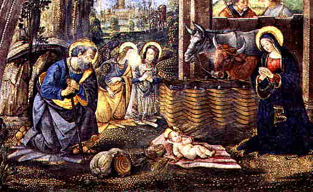

On December 12th, 1997,  Catholic World News reported that
the town of Bryan, Ohio had permitted an avowed atheist, Jerald Lasky, to
protest the religious use of governmental property by adding a sunburst image
to a Christmas nativity scene. The sunburst was to honor the winter solstice
occuring on December 21st, a traditional pagan festival day.
Catholic World News reported that
the town of Bryan, Ohio had permitted an avowed atheist, Jerald Lasky, to
protest the religious use of governmental property by adding a sunburst image
to a Christmas nativity scene. The sunburst was to honor the winter solstice
occuring on December 21st, a traditional pagan festival day.
I suppose we are to be shocked and appalled that pagan symbols should be allowed to intrude into Christian celebrations?
Below is a nativity scene by Pinturicchio and his assistants from 1492-94, in the Borgia apartments in the Vatican. There are probably hundreds of similar depictions of the nativity scene I could have selected, as this particular one is not unique in any respect.
|  |
| From a photo by M. Sarri |
Just how did we come to celebrate the birth of Christ on December 25th anyway? Do we know for a fact that this was the date of Christ's birth? Is the winter solstice of December 21st related in any way to Christmas? Just what is the winter solstice anyway?
For the answers see  Celebrating the Birth of the Sun.
Celebrating the Birth of the Sun.
 http://www.aloha.net/~mikesch/ |